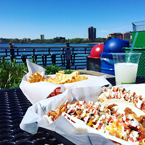
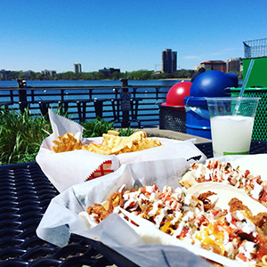
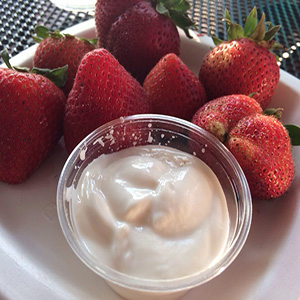
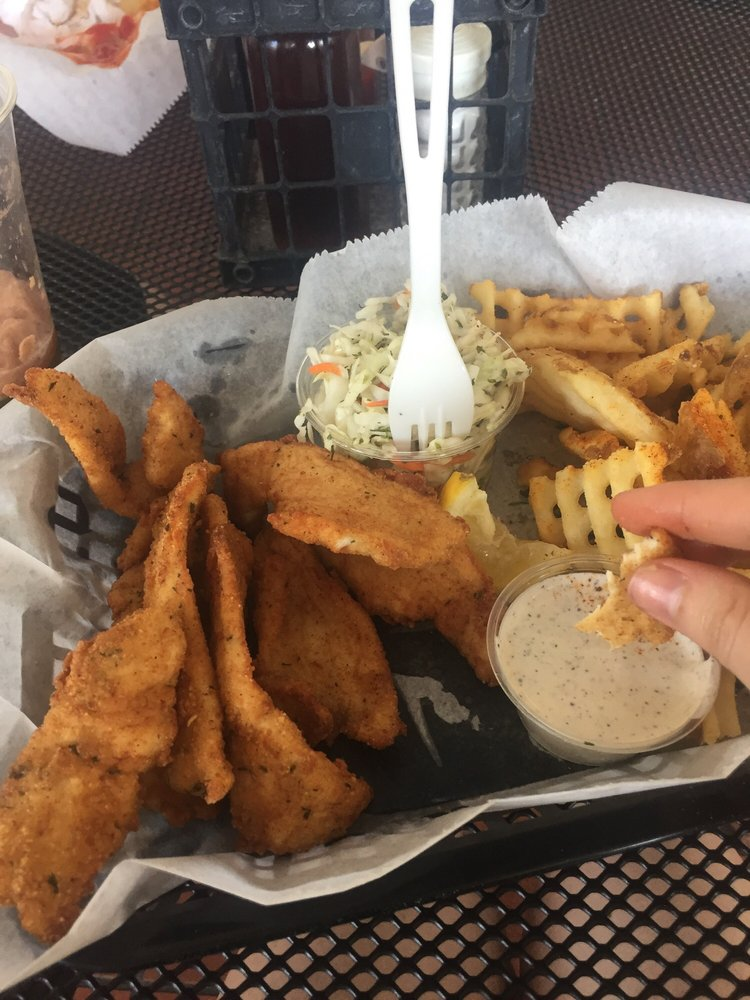
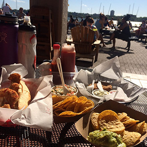

MENU
TACOS
Vegetarian 4
Fried Tacos
<<<<<<< HEAD =======

>>>>>>> 574979ab77d10efed9e27ef4b266f85a162883e6
=======

>>>>>>> 574979ab77d10efed9e27ef4b266f85a162883e6
Catfish 5
Shrimp 6
Calamari 6
Walleye 7
Grilled Tacos

Chicken 5
Tilapia 6
Shrimp 6
Mahi Mahi 8
Scallops 9
Make it a plater add 3.50
Gluten Free? Let us know!
CHILDREN’S MENU
Grilled Cheese & fries 5
Hamburger & fries 7
Cheeseburger & fries 8
Fish sticks & fries 9
DESSERTS
Fresh strawberries & dip 3
Homemade ice cream cones 1 scope 3
Many flavors 2 scoops 4
GRILLED SANDWICHES
Served on a fresh made toasted bun and served with tarter, hot & specialty sauces.
Tilapia 6
Catfish 7
Mahi Mahi 8
Walleye 9
Sail-N Lunch

Half sandwich on fresh made toasted bun topped with choice of sauce. 10
Includes fries & coleslaw.
GRILLED ENTRÉES
Served with fries, coleslaw & choice of sauces. Gluten free!
Tilapia 12
Shrimp 14
Mahi Mahi 16
Walleye 18
Mixed Fish 20
Shrimp, scallops & fish
SIDES
Coleslaw sm 2 lg 3
Fries sm 4 lg 6
Onion rings 8
Beverages
Too many to list see beverage menu


Back To Top
FRIED PLATTERS
Served with fries, coleslaw & choice of sauces.
Fish & Chips 10
Chicken Tenders 11
Catfish 12
Mahi Mahi 14
Walleye 18
Crab Cakes 16
Mixed Fish 20
Fish, shrimp, scallops & crab cake
SALADS
Mixed greens, choice of almonds, cranberries, mandarin and choice of dressings.
Vegetarian 5
Grilled chicken 7
Grilled shrimp 9
Grilled Manhi Mahi 10
ALA CARTE

Crab Cake 8
Homemade chips & salsa 8
Nachos (veggie, chicken) 10
Fried Calamari 14
Fried Shrimp 14
Shrimp Cocktail (6) 9 (12) 16
Fried Scallops each 4
<<<<<<< HEAD  ======= >>>>>>> 574979ab77d10efed9e27ef4b266f85a162883e6